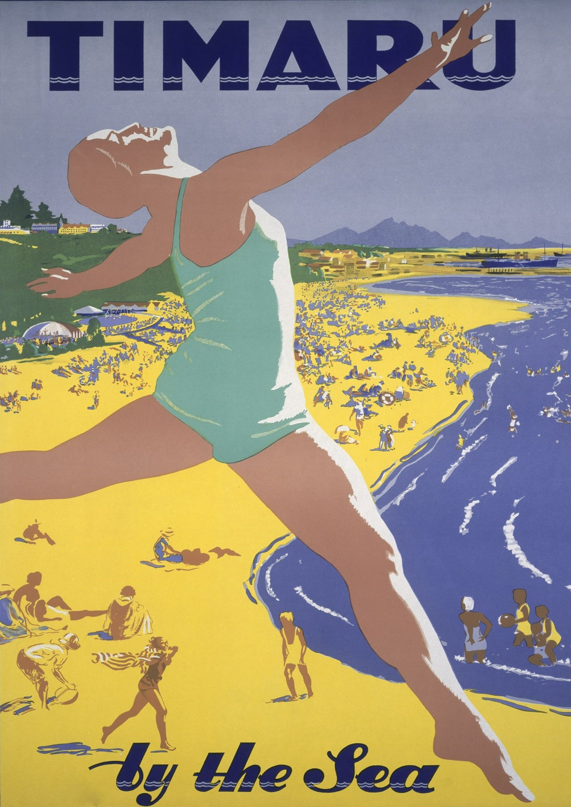

Site Plan - for "We Love Timaru" Chamber of Commerce website
Site Name
websiteWe Love Timaru - Timaru City Chamber of Commerce
Site purpose
The heart says it all - we love Timaru and all the amazing opportunities we have living in this beautiful part of New Zealand. WeloveTimaruCommerce.nz celebrates all the things we love about living in Timaru, from our affordable houses, to our easy commute, great lifestyle and our successes. The Chamber of Commerce website will provide opportunities to inform the community and for the community to Join in. The story is your story, come along with us to build our community.
Description
Timaru the Rivera of the South. This picture illustrates one of the key features of Timaru. The colours are used in selecting a colour palette, see color-scheme.
Logo